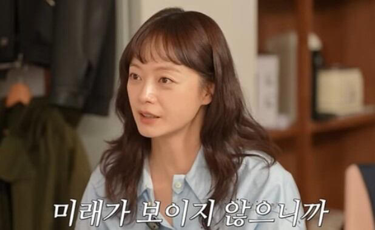
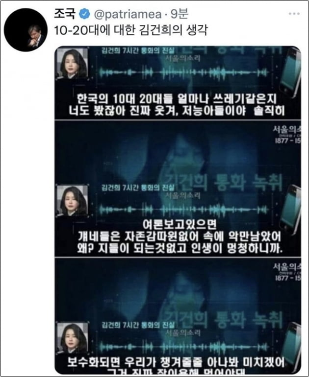
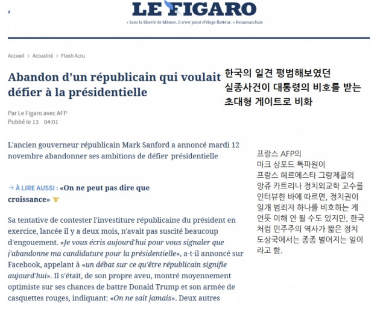
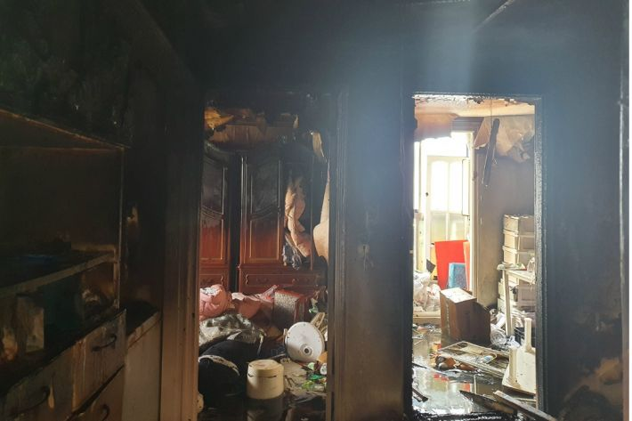

기록
우리는 흥미로운 제목이나 사진을 보고 기사를 클릭했을 때, 정작 내용이 제목과 관련이 없거나
심지어 완전히 왜곡된 경우를 경험하곤 합니다.
이러한 가짜뉴스는 정보를 왜곡할 뿐만 아니라, 대중의 혼란을 초래하며
사회적 신뢰를 무너뜨리는 심각한 문제로 이어질 수 있습니다.
우리는 이를 인지하고 경각심을 가질 필요가 있습니다.
본 프로젝트는 사용자들에게 아카이빙된 사례를 제공하며, 단순히 가짜뉴스를 지적하는 데 그치지 않습니다.
올바른 정보 판별 기준을 제시하고, 건강한 정보 환경을 조성하기 위한
새로운 접근법을 제안하고자 합니다.
가짜뉴스를 구분하는 방법
1. 제목과 내용 비교
가짜 뉴스는 주로 자극적이고 과장된 제목을 사용하여 클릭을 유도합니다.
제목과 내용이 지나치게 다른 경우, 즉 제목이 매우 자극적이거나 공포를 유발하지만
본문 내용이 빈약하거나 근거가 부족하면 가짜 뉴스일 가능성이 있습니다.
2. 글쓴이와 날짜 확인
기사의 작성자가 누구인지, 작성 날짜가 언제인지 확인하는 것이 중요합니다.
작성자가 익명으로 처리되거나 날짜가 없는 경우 신뢰할 수 없는 정보일 수 있습니다.
또한, 과거 사건을 최근 사건처럼 보도하는 경우도 주의해야 합니다.
3. 사실 확인의 중요성
사실이 확인되지 않은 기사는 공유하거나 유통하지 말아야 합니다.
기사의 진위 여부를 확인하고, 신뢰할 수 있는 출처인지 검토하는 습관을 가지세요.
아이브 장원영, 유튜버 ‘탈덕수용소’ 상대 1억원 손배소 승소
걸그룹 아이브의 멤버 장원영 씨가 유튜버를 상대로 낸 손해배상청구 소송에서 승소했다.
재판부는 “박 씨가 장 씨에게 1억 원과 지연이자를 지급해야 한다”고 주문했다.
사과는 없었다…민희진 구구절절 100분 원맨쇼
상처받은 이들에 대한 사과는 없었다. 민희진 어도어 대표는 "모두가 피해자"라며 언급하기 싫다는 뜻을 밝혔다.
러블리즈 서지수 “이상형 여진구, 날 진심으로 사랑해줬으면” [화보]
팬분들을 처음 맞닥뜨리는 순간 너무 울컥하고 표정이 못 숨겨진다고. 이어 서지수가 생각하는 이상형은 무엇인지 묻자 “나를 진심으로 사랑해주는 사람”이라며 외면적으로는 “여진구 배우님처럼 눈이 예쁘고 턱이 남자다운 분을 좋아한다”라고 답했다.
"윈터 연애·담배 NO,뒷감당 가능?"…엔하이픈 정원, 얼마나 억울했으면 본인 등판
그룹 엔하이픈 정원이 자신을 둘러싼 루머를 직접 해명했다.
이날 정원은 "연애하냐는 댓글이 있는데 저 연애 안한다. 담배도 안 피운다.
올리신 분이 뒤에 어떻게 감당하려고 하시는지 모르겠는데 저 연애도 안하고 담배도 안 피운다. 어이가 없어가지고"라고 말했다.
해체 후 새 출발 or 갈등 봉합…뉴진스, 라이브 방송→전속계약 해지 관련 기자 회견 연다
멤버들이 라이브 방송에 이어 기자회견을 열어 입장을 밝힐 예정이다.
28일 뉴진스 멤버(민지, 하니, 다니엘, 해린, 혜인) 측은 보도자료를 통해 이날 오후 8시 30분에 전속계약 해지 관련 긴급 기자회견을 진행한다고 밝혔다.
앞서 지난 13일 뉴진스는 소속사 어도어에 '전속계약 위반사항 시정 요구의 건'이라는 제목의 내용증명을 보냈다.
배우 이순재, 드라마 촬영 중 쓰러졌다…가족·동료 비상 집결
2내일(30일)과 모레(31일) 방송되는 KBS 2TV 수목드라마 ‘개소리’(극본 변숙경, 연출 김유진, 제작 아이엠티브이) 11, 12회에서는 사건 해결을 위해 함께 달려왔던 이순재와 소피의 환상적인 공조가 종지부를 찍는다.
'이순재 사망설' 떠돌아 누리꾼 깜짝… 알고 보니 '이것' 때문?
배우 이순재(89)가 사망했다는 가짜 뉴스가 떠돌면서 누리꾼의 가슴을 철렁하게 했다. 지난 23일 유튜브에는 '이순재 별세' '이순재 건강' '이순재 사망'과 관련된 여러 영상이 게재됐다. 관련 영상은 이순재가 과거 동료 연예인들의 장례식을 방문한 장면이나 드라마 속 장면 일부를 교묘하게 짜깁기해 만든 것이었다. 일부 포털 뉴스 검색창에 '이순재 사망' 등이 자동 검색 단어로 오를 정도였다. 이에 누리꾼들은 "가짜뉴스 처벌해야 한다" "깜짝 놀랐다" 등의 반응을 보였다.
전소민, 런닝맨 하차 후 카페 알바 “계약 조건은 마스크 안 쓰기”
배우 전소민이 예능프로그램 ‘런닝맨’에서 하차한 이후 카페 아르바이트를 했다고 밝혔다. 전소민은 지난 13일 공개된 지석진 유튜브 채널 ‘지편한세상’에 출연해 이런 사연을 밝혔다. 영상에서 전소민은 SBS ‘런닝맨’에 함께 출연했던 지석진과 만났다. 지석진은 “소민이가 런닝맨에서 나가고 거의 처음 보는 것”이라며 “얘가 (나가겠단) 의사를 표현했고 잡아봤지만 안 잡히더라. 나 뿐만 아니라 다들 잡았다”고 했다.
"10~20대에 대한 김건희의 생각"
김두관 "민간 임대사업자 보유주택 93% 종부세 면제"
민간주택 임대사업자가 보유한 150만여 호 가운데 140만 호가 종합부동산세를 면제받은 것으로 분석됐다.

이재명, “국민의힘 ‘김혜경 수행비서 채용’ 고발…‘가짜뉴스’ 엄중 대처"
“공무원, 배우자 수행비서로 채용 안해” “지사 배우자 일정 수행·의전도 최소화” 국힘, 대검에 고발장·재수사촉구서 제출 이미지 확대
강용석 "조동연 제보 쏟아져"… 민주당 "강력한 법적 대응"
더불어민주당은 이재명 대선후보의 1호 영입인재인 조동연 상임 공동선대위원장의 사생활 문제를 제보받았다는 강용석 변호사 주장에 대해 “전혀 사실이 아니다”라며 허위사실 유포에 대해 법적 조치를 취하겠다고 경고했다.

안민석, 조동연 사생활 의혹 '가짜뉴스'랬는데… 법원 기록은 달랐다
이재명 더불어민주당 대선후보가 ‘영입인재 1호’로 발표한 조동연 공동상임선대위원장에 대한 사생활 관련 의혹이 유튜브에서 불거졌다. 이에 여당 선거대책위원회 총괄특보가 방송에 출연, 해당 의혹을 “가짜뉴스”라고 했다. 그러나 확인 결과 조 위원장은 실제로 이혼한 남편으로부터 제기당한 친자(親子) 확인 소송에서 패소한 사실이 있었다. “가짜뉴스”라는 공당(公黨) 중진(重鎭) 의원의 발언이 오히려 ‘가짜뉴스’에 가까웠다.

'조작 증거'라는 민경욱 투표용지…선관위는 "누군가 탈취"
민경욱 미래통합당 의원이 사전투표 조작 의혹의 증거라며 제시한 투표용지가 경기 구리시 선거관리위원회에서 유출된 것을 확인하고 중앙선관위가 수사 의뢰한 사건을 의정부지검이 맡게 됐다.
민경욱에 투표지 건넨 제보자 구속
선거법 위반… 法 “증거인멸 우려” / 민 前의원·보수 유튜버 항의집회
4·15 총선 때 개표장에 있던 투표용지를 가지고 나와 미래통합당 민경욱 전 의원에게 전달한 제보자가 구속됐다.
'가짜뉴스 방지법' 만든 싱가포르, 야당부터 잡았다
윤석열 대통령이 연일 '가짜뉴스 척결'을 외치고 있는 가운데, 정부가 허위정보 규제에 직접 나설 경우 야당 등 비판 세력을 탄압하는 데 악용할 수 있다는 우려가 나왔다.
"서울에 탱크 출몰" "심야 불시검문"…공포 더 키운 가짜뉴스
윤석열 대통령이 지난 3일 오후 10시 23분께 예고 없이 비상계엄을 선포하면서 속보를 접한 시민들에게는 '멘붕'이 찾아왔다.
특히 계엄 선포부터 계엄 해제요구안이 국회에서 가결되기까지 155분 동안의 전 과정이 사회관계망서비스(SNS)를 통해 실시간으로 공유되면서 한밤중에도 온라인 여론이 들끓었다. 이 과정에서 '가짜뉴스' 전파라는 SNS 부작용도 나타났지만, 네티즌의 집단지성을 통한 '팩트체크'로 가짜뉴스를 걸러내는 자정 노력이 돋보인 하루였다.
[단독]‘30억 보험’ 실종 기장, 15억 빚 있었다
지난달 28일 제주 인근 해상에 추락한 아시아나항공 화물기 OZ991편의 기장 A 씨(52)가 사고 직전 거액의 빚을 지고 있었던 사실이 4일 확인됐다. A 씨는 6월 말부터 사고 발생 열흘 전까지 21일 동안 총 30여억 원을 받을 수 있는 보험 7개에 가입했다는 사실이 알려져 관심을 모은 바 있다.
"참가자만 1,200명" 인하대에서 또 텔레그램 딥페이크 성범죄
유 씨가 채팅방에 들어가 보니 연락처와 학번 등 개인정보와 함께 여성의 나체 사진에 유 씨 얼굴을 합성한 딥페이크 합성물 수십 개가 쏟아졌습니다. 유 씨의 목소리로 노예나 주인님과 같은 단어를 말하는 음성 파일도 있었다고 합니다. 참가자는 무려 1,200명, 방이 개설된 시점은 지난 2020년이었습니다.
[한강사건] 해외에서 보는 한강사건에 대한 의견은 "타살"에 무게
해외 범죄전문가 동석자의 상태보면 "만취"라고 보긴 어려워 동석자가 "블랙아웃"일 가능성은 희박하다
[단독] 쿠팡 노조, 본사 점거하고 대낮부터 술판 벌였다
쿠팡 본사를 점거하고 노숙 농성을 벌이고 있는 민주노총에 대한 쿠팡 직원들의 여론이 들끓고 있다. 노조원들이 로비에 돗자리를 펼치고 술판까지 벌이고 있다는 사실이 알려지면서 도를 지나치는 노조의 행태에 대한 경찰의 엄정 대응이 필요하다는 목소리가 높아지고 있다.
[속보] 진도 여객선 침몰··안산 단원고등학교 학생ㆍ교사 338명 전원 구조
진도 여객선 침몰··안산 단원고 학생ㆍ교사 338명 전원 구조
16일 오전 9시쯤 전남 진도군 관매도 인근 해상에서 침몰된 여객선에 탑승한 안산 단원고등학교 학생 338명 전원 구조된 것으로 알려졌다.
세월호 광장 옆에서 유족과 자원봉사녀 성행위, 대책 대신 '쉬쉬'
세월호 참사가 발생해 광화문광장에 차려진 세월호광장 분향소 옆 유가족 숙소와 인근의 임시 유족 숙소 등에서 유가족과 자원봉사 여성이 부적절한 관계를 맺은 사실이 뒤늦게 알려졌다.
국민적 추모 분위기 속에 부적절한 행태에 대책위는 쉬쉬해 자원봉사자들을 실망시키고 문제제기한 봉사자들은 왕따시켰다는 주장이 제기됐다.
식용유가 무슨 죄? ‘대왕 카스텔라’ 논란
채널A ‘먹거리 X파일’서 “식용유 과다 사용” 보도 전문가 “탄력 위해 써…식용유 사용 이상한 일 아냐” 황교익 “식용유보다 무첨가 마케팅이 문제” 꼬집어
'급식 대신 라면 끓이다 참변' 인천 초등생 형제…사흘째 중태
119 신고 당시 "살려주세요" 외쳐 전신 화상‧장기 등 다쳐 위중…수년간 방임 학대 피해 가정 자녀로 확인돼 코로나19 시대 돌봄 사각지대 아이들 보호 대책 나와야 정세균 "대책 마련 서두르겠다"
[속보] "대한민국 최초 노벨 문학상 수상" 소설가 한강, 노벨상 포상금 전액 독도에 기부
한강 작가, 한국인 최초 노벨문학상 수상
한강 작가가 역사의 현장에 올랐다. 한국 문학에 있어 벼락같은 축복이었다. 문학계에서는 한강 작가의 이번 수상 소식이 반짝 특수가 아니라 지속적인 관심으로 이어지길 바라는 염원도 이어졌다. 한국 사회에 여전히 이어지고 있는 폭력에 대해 나지막하게 대항하는 담론도 있었다.
도 넘는 유튜브 가짜뉴스, 속 타는 연예계
지난해 3월 결혼해 슬하에 아들을 둔 배우 현빈과 손예진 부부도 표적이 됐다. 20일 연예계에 따르면 이들 부부가 결혼 6개월 만에 이혼했다는 가짜뉴스 영상이 최근 유튜브에 게재됐다. 양쪽 소속사 관계자는 이날 쿠키뉴스에 “명백한 허위사실”이라며 “해당 채널을 신고하고 영상 삭제 요청을 해놨다”고 말했다. 양측은 법적 대응도 검토하고 있다. 영상은 이날 기준 조회수 30만 건을 넘긴 상태다.
왼쪽 하단의 뉴스 폴더를 클릭하면, 선택한 카테고리와 관련된 뉴스를 확인할 수 있습니다.
화면에 표시된 뉴스의 내용과 팝업창 상단의 표시를 보고, 직접 가짜뉴스와 진짜뉴스를 걸러내 보세요!
당신이 판별한 진짜뉴스는 기록에 저장되어 언제든 다시 확인할 수 있습니다.
그 외에도 다양한 아이콘을 눌러보며 숨겨진 기능들을 탐색해 보세요!